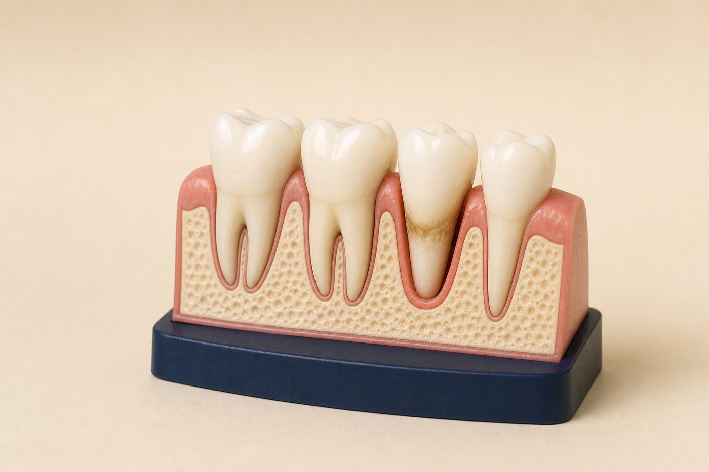

Chart
Measure gums, evaluate bone, and determine the diagnosis.
Gum disease treatment in Renton, WA
Scaling and root planing—often called a deep cleaning—removes bacteria and hardened deposits below the gumline when periodontal pockets are too deep for routine cleaning alone.

Your treatment path
Periodontal care is a partnership between professional treatment and daily home care.
Measure gums, evaluate bone, and determine the diagnosis.
Clean below the gumline with local numbing when appropriate.
Measure healing and identify areas needing additional care.
Use a personalized periodontal maintenance interval.
Advanced or non-responsive periodontal disease may require referral for specialty evaluation or additional treatment.
Why treatment matters
Periodontal disease affects the bone and tissues supporting teeth. Early diagnosis and consistent maintenance help control the condition and reduce future support loss.
Persistent inflammation can signal bacterial buildup above and below the gumline.
Deeper spaces are harder to clean at home and can harbor disease-causing bacteria.
Periodontitis can reduce the structures that hold teeth stable.
What we evaluate
Not all bleeding gums require the same treatment. We distinguish gingivitis from periodontitis and assess modifying risk factors.
Gum disease FAQ
Scaling and root planing removes plaque and hardened deposits from below the gumline and smooths contaminated root surfaces.
A regular cleaning focuses mainly above the gumline for patients without active periodontal disease. Deep cleaning treats deposits and inflammation in deeper pockets.
Gingivitis can often be reversed. Periodontitis causes permanent support loss but can often be managed with treatment, home care, and maintenance.
Many patients need maintenance more frequently than standard six-month visits. The interval depends on severity, response, risk factors, and home care.
A periodontal evaluation can show whether routine cleaning or deeper treatment fits your needs.